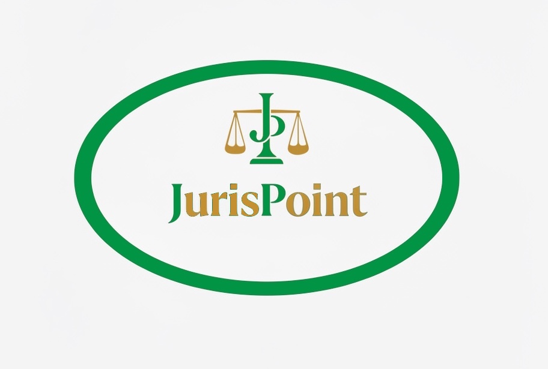

JurisPointProfessional Legal Services Serving Clients Across Dhaka & Nationwide
For any legal queries or professional legal assistance, please contact us using the details below.
Email: consultant@jurispointbd.com
Room No.- 201
First Floor
Bar Association Bhaban
Gaibandha-5700, Bangladesh
Mobile: +8801772801819
Hall Room No.- 01
Bar Association Bhaban
Ramna
Dhaka-1000, Bangladesh
Mobile: +8801739858886
Room No. 5, Ground Floor
Foujdari Bar Building
In front of DC Office
Pabna-6600, Bangladesh
Mobile: +8801756993272
Q: How do I schedule a consultation with your lawyers?
A: You can call, WhatsApp, or email us to arrange a consultation.
Q: Do you provide legal services outside Dhaka?
A: Yes, we provide legal services throughout Bangladesh.
Q: Do you provide services for private clients?
A: Yes, we provide legal assistance for individual clients, corporate clients, and institutions.
Q: Is my information kept confidential?
A: Absolutely. All client communications and information are strictly confidential.
Q: What documents should I bring for my consultation?
A: Please bring relevant legal documents, agreements, or correspondence for the consultation.